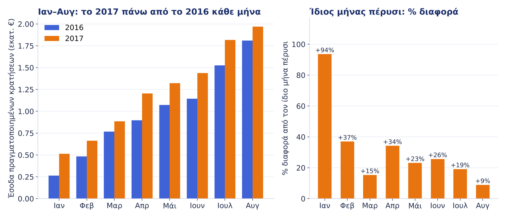
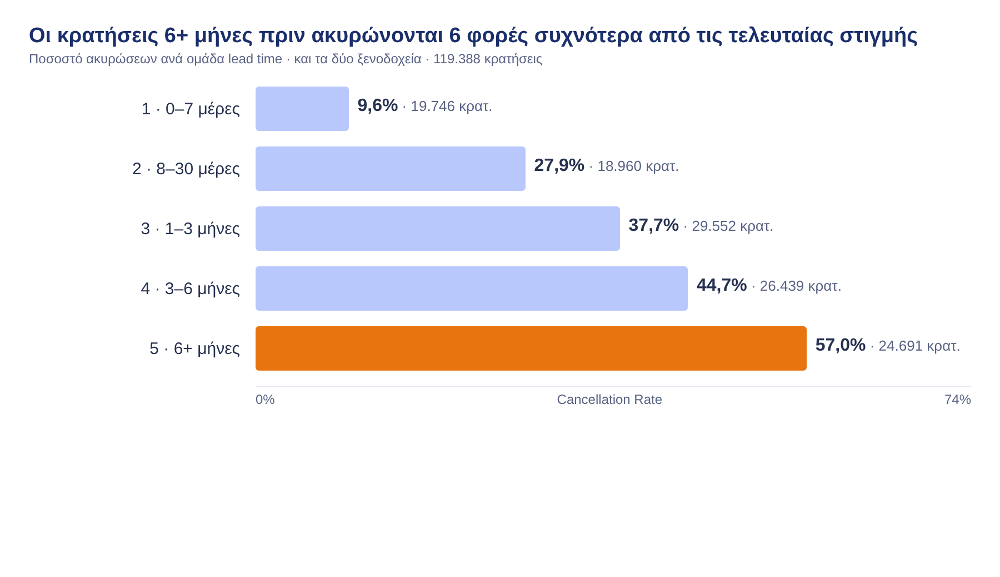
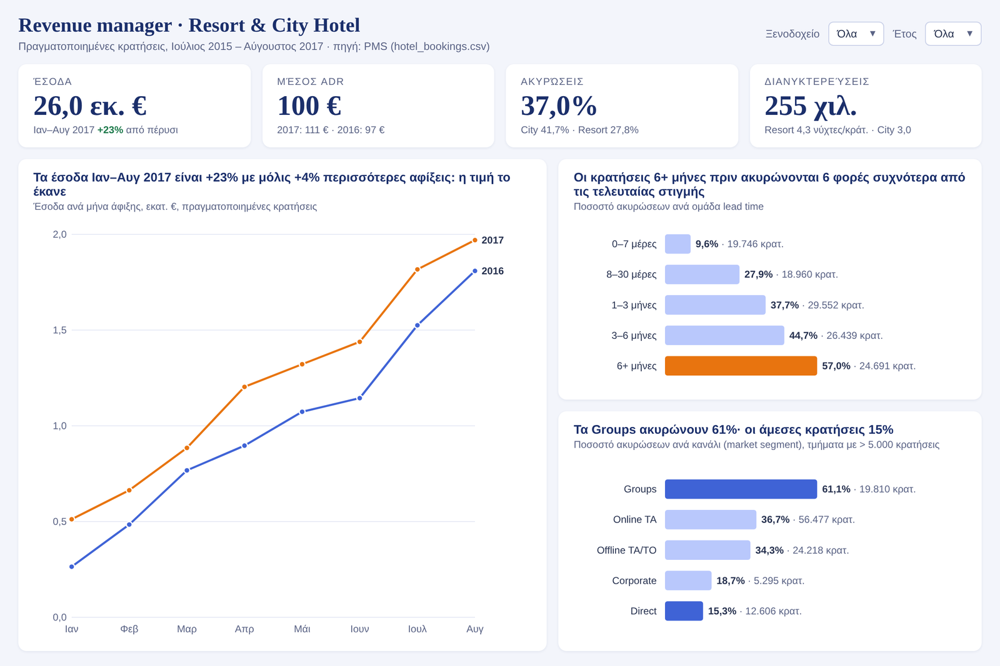
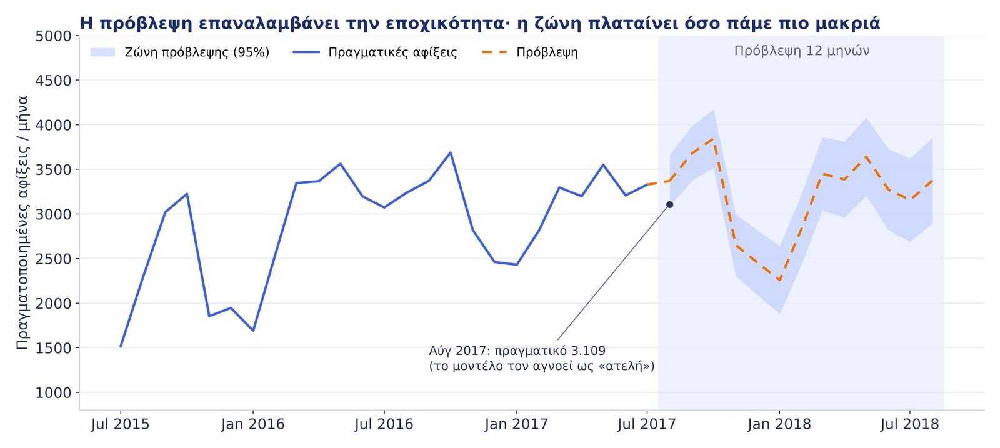

Resort & City Hotel: πώς πήγε το 2017 και τι κάνουμε το 2018
Λεζάντα · 0:00–1:00Ιαν–Αυγ 2017: +23% έσοδα με μόλις +4% περισσότερες αφίξεις

Τι λες 60″
Πρώτη πρόταση, πριν οτιδήποτε άλλο: «Το 2017 βγάλαμε 23% περισσότερα έσοδα με τους ίδιους σχεδόν πελάτες, και προτείνω να το ασφαλίσουμε με προκαταβολή στις πρώιμες κρατήσεις.» Μετά το γράφημα: κάθε μήνας του 2017 πάνω από τον αντίστοιχο του 2016, από +9% τον Αύγουστο ως +94% τον Ιανουάριο. Δείχνεις με το ποντίκι τον Ιούνιο: 1,14 → 1,44 εκατ., +25,7%.
Πώς φτιάχτηκε
Φύλλο
Έσοδα vs πέρυσι: MONTH discrete στο Columns, SUM(Revenue Kept) στο Rows, YEAR στο Color, Quick Table Calculation › Percent Difference › Compute Using › Year (βήμα 4Α). Το +23% του συνόλου: YEAR στο Columns με φίλτρο μηνών Ιαν–Αυγ (βήμα 6).Λεζάντα · 1:00–2:00Το City Hotel ανέβασε τιμές σταθερά, +1,8 € τον μήνα· το Resort ζει από την εποχικότητα

Τι λες 60″
«Οι αφίξεις δεν άλλαξαν· άλλαξε η τιμή.» Στο City Hotel ο μέσος ADR ανεβαίνει 1,8 € κάθε μήνα επί δύο χρόνια, και η άνοδος είναι σταθερή, όχι εποχική (R² = 0,50). Στο Resort η ευθεία δεν λέει τίποτα (R² = 0,06): Αύγουστος 190 €, Ιανουάριος 50 €. Το ρίσκο, δυνατά: η τάση περιγράφει το παρελθόν· κάποια στιγμή η ζήτηση αντιδρά στην τιμή.
Πώς φτιάχτηκε
Φύλλο
Τάση ADR: MONTH continuous, AVG(ADR), φίλτρο Canceled = No, Hotel στο Color, Analytics › Trend Line › Linear (βήμα 4Β).Λεζάντα · 2:00–3:00Οι κρατήσεις 6+ μήνες πριν ακυρώνονται στο 57%· είναι 24.700 κρατήσεις

Τι λες 60″
«Το κέρδος του 2017 είναι εύθραυστο, γιατί ένα στα πέντε δωμάτια που κλείνουμε, κλείνεται πάνω από 6 μήνες πριν, και από αυτά το 57% δεν έρχεται ποτέ.» Σύγκριση με την τελευταία εβδομάδα: 10%. Αν θες και το κανάλι: τα Groups ακυρώνουν 61%, οι άμεσες 15%.
Πώς φτιάχτηκε
Φύλλο της Εβδομάδας 3 (
Ακυρώσεις ανά lead time): Lead Time Group στο Rows, Cancellation Rate στο Columns, Count στο Label. Μία μπάρα με χρώμα: Ctrl+κλικ › Color, οι υπόλοιπες γκρίζες.Λεζάντα · 3:00–4:00Προκαταβολή 30% για κρατήσεις πάνω από 6 μήνες πριν· με 200 δωμάτια το Resort αντέχει overbooking 5% τον Αύγουστο

Τι λες 60″
Απόφαση, κόστος, ρίσκο. «Για κρατήσεις πάνω από 6 μήνες πριν ζητάμε 30% μη επιστρέψιμη προκαταβολή. Κόστος: ίσως χάσουμε λίγες πρώιμες κρατήσεις από πελάτες που δεν θέλουν δέσμευση. Ρίσκο αν δεν το κάνουμε: 57% ακυρώσεις σε 24.700 κρατήσεις, δηλαδή δωμάτια που μένουν απούλητα στην υψηλή σεζόν.» Κουνάς το slider Rooms μπροστά τους: «με 200 δωμάτια ο Αύγουστος είναι 91%, με 180 ξεπερνά το 100%: άρα το ξενοδοχείο έχει τουλάχιστον 200».
Πώς φτιάχτηκε
Το dashboard της Εβδομάδας 3, ανανεωμένο με τους έξι κανόνες (βήμα 5)· στο story σύρεται ολόκληρο, με τις παραμέτρους στις τιμές του σεναρίου και
Update στο σημείο.Λεζάντα · 4:00–5:00Αν συνεχίσει το μοτίβο: ~38 χιλ. πραγματικές αφίξεις Σεπτ 2017 – Αυγ 2018· ο χειμώνας μένει το αδύνατο σημείο

Τι λες 60″
«Αν συνεχίσουν όλα όπως πήγαιναν, περιμένουμε για τον Ιανουάριο 1.900–2.700 αφίξεις, πιθανότερα γύρω στις 2.300· μόνιμο προσωπικό για το κάτω όριο, έκτακτο για το πάνω.» Και το κλείσιμο, τι δεν ξέρουμε: «Υποθέσαμε 200 δωμάτια και 18% προμήθεια, η πληρότητα είναι κατά προσέγγιση, και η πρόβλεψη δεν ξέρει τίποτα για το 2018 εκτός από το 2016 και το 2017. Επόμενο βήμα: να το τρέξουμε με τα πραγματικά νούμερα από το PMS.»
Πώς φτιάχτηκε
Φύλλο
Αφίξεις ανά μήνα: MONTH continuous, COUNT(Booking ID), Canceled = No, Analytics › Forecast, Exactly 12 Months (βήμα 3).